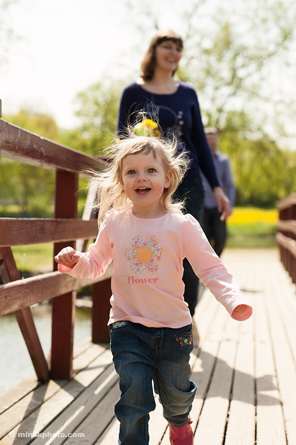

Здравствуйте, это я!

Нас не догонишь
Ещё не ходит, но особым способом - отталкиваясь левой ногой и руками - на пятой точке с подвёрнутой правой ножкой весьма резво путешествует по квартире. Дед подарил громогласного ковбоя, скачущего на лошади и дуркой орущего в духе кантри. Заинтересовалась, а ковбой, постукавшись о стенки и стулья, поскакал-покатился на неё. Какой был спринтерский драп под кровать - Усэйн Болт отдыхает...
Два года. Возвращаются с дедом с прогулки. На перекрёстке увязался за ними бульдозер. Софи ведёт деда да оглядывается. Раз-другой - и наутёк! Дед еле догнал рекордсменку метров через двадцать. Не останавливаясь, схватила его за руку и потащила: «Не догонит!» И - в сторону лязгающего чудища: «Кыш!» Чудище чихнуло и заглохло...
О, женщины...
На Дне рождения (два года) неожиданно забралась на колени сидящего на диване деда и влепила такой поцелуй в губы, что дед, которого ТАК никто не целовал, - в отпаде... Через некоторое время вдохновлённый воспоминанием дед сам пытается чмокнуть в щёчку уходящую «домой» Соняшу. Но его чопорно, нос воротя от антиквариата, закладывают: «Пап, а меня дед целует». Денис: «Ну, сама решай...» Отвергнутый дед в другой раз и не пытается. Бабушке, с обидой: «А он забыл меня поцеловать...»
Деду непонятны целования рук при расставании: ему, бабушке, гостям... Объясняет Софи, что никому она так делать не должна, потому что только мужчины целуют руки женщинам. Внимательно смотрит на свои ладошки: «И девочкам - тоже?»
Жулик
Всё хватает и прячет. Дед смотрит телевизор. Вдруг - цап-царап! - TV-пульт мелькнул перед носом. Из положения лёжа дед в прыжке ловит пульт и отчаянно пытается удержать. Тогда молниеносно хвать его часы - и дёру в другую комнату. Дед требует свою игрушку назад. Бабушка «подговаривает» обезьянку Чику «найти». Соняша честно тащит плюшевую Чику, показывая пиратский схрон за пианино. Папа Денис отрывается от компьютера:
- Эх ты, жулик...
- Я не жулик!
- Ну как же: если берёшь не своё, значит - жулик.
Нотация не доходит. Через час подкрадывается к деду и крадёт ключи. Но бдительная бабушка ловит сорвиголову в коридоре. Приходится возвратить дедову побрякушку, выдав сентенцию о тщете воспитания: «Всё равно все жулика любят...»
Процесс пошёл
Был один губошлёп генсек и президент в одном флаконе, пустивший в мир слоган «Процесс пошёл». Заболтал свои же благие намерения, не сумев удержать великую страну от развала. В государстве, где всегда хотят как лучше, а получается как всегда, духоподъёмное одностишие и подзабыть успели.
Но вибрации - они в воздухах не исчезают. Сидит София на горшке и подозрительно глубокомысленно сообщает: «Процесс пошёл».
И все осколки империи радуются, что это уже никому ничем не грозит.
Плачет от счастья
Обрызгивают с бабушкой из пульверизатора диффенбахия. С больших листьев капли скатываются на пол.
- Бабушка, смотри - это цветок плачет от счастья!
Авангард
- На фортепьяно, Соняша, надо играть аккуратно - пальчиками.
- А мне нравится, как Чика играет...
- ???
Вундеркинд, чей нос едва задран над клавиатурой, без напряга поднимает ногу и голой пяткой расширяет диапазон современного исполнительства.
Буду мамой
Глупые взрослые вечно пристают с вопросом: «Кем ты будешь?» В два года Соняша давно уже определилась (см. заголовок). Однажды после папуасского танца бабушка принесла ей сок и спрашивает: «Может, Чика тоже хочет пить?»
София кладёт партнёршу Чику на пол, ложится рядом, задирает платьице до подбородка, наклоняется над Чикой... и даёт ей сосать грудь.
Кто придумал этот сон...
Спать днём не любит, отбрыкивается. Чтобы играть. На уговоры бабушки снизошла: «Буква Е с закрытыми глазами, Ё - с открытыми. Буду спать, как Ё...»
- Сна ни в одном глазу! - сердится бабушка после безуспешной попытки убаюкать проказницу.
- Так у меня же два глаза, бабушка...
Поздний вечер. Та же песня. Папа показывает на чёрное окно: "Сейчас ночь или день?"
С наглой задумчивостью: "Какой-то непонятный день..."
- Ну почему ты не засыпаешь!?
- Мне и так жизни не хватает!
Будетлянка
Утром Соняша заявляет: «Папа храпит, мама тоже, немножко. А животные не храпят». Папа: «Почему?» - «А у них нет храплей...»
На следующий день отсутствующие органы храпа уже именовались храпнушками.
Мусоровоз
Разбросала игрушки, а собирать не хочет, тут же найдя оправдание: «Это мусор». Пришлось бабушке стать самосвалом, а Софи - экскаватором. Погрузили мусор, а тут дед заглянул. Экскаватор радостно ковшом замахал и, по-новому всё разбрасывая, кричит: «Ещё один мусоровоз пришёл!..»
Ой, боюсь-боюсь...
Завела моду театрально пугаться. Дед внушает, что никого и ничего не надо бояться. Раз и увидел, как Софи прыгает с тахты на кресло. Почти метр, однако... Испугался, кинулся к ней с её же присказкой, а в ответ: «Не надо бояться! Ты же Дед-Бородед, а не маленькая девочка».
Кыш
Учит деда переходить дорогу на светофоре. Правой рукой ведёт его, а левой грозит испугавшимся красного света авто: «Кыш, машинки, кыш!..»
Ревниво оберегает особые, дружбанские отношения с бабушкой, которая обладает поразительной способностью быть на одной возрастной ноге с этой девицей. Педант дед пытается из игр и книг пользу извлечь, а спевшийся - в буквальном смысле - дуэт может десятки раз орать полюбившуюся песенку или читать выученную наизусть книжку. Страшно только одно расшалившейся непослушнице: если подружка скажет, что не будет с ней играть. Так что деду случается попадать под раздачу: «Кыш, дед, мы играем!»
Все защищают обиженного деда, а маленькая женщина, понимающая, что всех слабее, не может лишить себя удовольствия от ощущения власти над этим Дедом-Бородедом, Серым Волком...
Логика
Собирает конструктор. И по ходу бормочет себе под нос о маминых родственниках: "Лида любит Артёма, бабушка Наташа - дедушку Витю. Мне два годика. Пока..."
Отрицательные числа
На фарфоровой подставке лежат три персика. Съела один - сколько осталось?
- Два.
Съела ещё один: один остался.
- А если ещё съешь?
- Ноль!
И, не дожидаясь вопроса, наглядно демонстрирует понимание отрицательных чисел: - После нуля подставку будем есть...
Дочки-матери
Какая же ты принцесса, если конфетки и тортики нельзя всё время есть? Уходят Соняша с папой к бабушке, и борец за равноправие даёт ц/у маме-королеве: "Никаких сладостей... только сосиски соси".
Проживая наши жизни
Каждый день у заядлой мультяшницы новое имя: Милли, Панда, Акробат, Львёнок... София Денисовна не входит в роль - она взаправду становится живым киношным образом. Знакомясь с кем-то, перевоплощение так представляется попугаем Ара, что все тут же начинают чистить пёрышки и прищёлкивать клювами. А если забывчивый дед путается в этой чехарде, котёнок Ягуар кусает ходячий склероз, возвращая память и желание дожить до свадьбы будетлянки...
- Папа, у меня есть вопрос: вот зачем ты появился на свет?
- Общего ответа как бы и нет, каждый сам решает...
- А я знаю, зачем я появилась: чтобы жить!
- Хорошо, а зачем жить?
- Чтобы всё делать...
- А зачем всё делать?
- Чтобы жить!
- Круг замкнулся?
- Да-а!
Скажи, что я хорошая
Гуляет Соняша с бабушкой и дедом в заброшенном яблоневом саду. Женщины в салатовых накидках из городской службы собирают хлам в тракторную повозку. Схватила корягу с себя ростом и подтащила к ним. С достоинством выслушала их похвалу и говорит бабушке: "Бабушка, ты расскажи маме и папе, как я помогала сегодня. Вот они-то удивятся..."
Вовремя и к месту
"Жили-были дед да баба..." - чопорная бабушка категорически против всяких "баб": только сю-сю-сю... Когда не засыпается, попоёт себе Соняша песенки и начинает канючить: "Бабушка, бабуленька..." Затем голос крепчает: "Лена-а-а!" И наконец: "Елена Георгиевна!!!" А непривереда-дед не против хоть горшком прозываться. Так и повелось: дед да Бородед. Кто ни спросит маленькую вредняшку, как деда-то зовут, кто ни учит - молчит партизанка и притворяется блондинкой. Вот как-то гуляют безымянный дед с внучкой в яблоневом саду и проходят мимо двух молодых женщин, стоящих с детской коляской под деревом. Одна из них обращается к деду: "Мужчина, не дадите прикурить?" И нарывается, бедняга, на ревнивый окрик малявки: "Это не мужчина, а Вова!"...
Женское желание
Мама с папой приучают Соняшу всё делать самостоятельно. И проблем с этим не бывает. Но у бабушки девица живёт принцессой: может, придя с улицы, полчаса не раздеваться и хныкать, чтобы ей помогли в непосильном труде. Дед интересуется:
- Соняша, а когда ты станешь мамой, ты будешь своих детей учить одеваться-раздеваться?
- Конечно.
- А как же ты научишь, если сама так не делаешь?
- Так это когда будет: надо же учиться постепенно.
- Но ты ведь уже можешь! Почему в Зелёном доме ты делаешь это по-взрослому, а у нас всё агушечкой прикидываешься?
- Эх, дед, тебе не понять, как иногда хочется заново помолодеть...
Эх, защитнег...
- Дед, защищай меня!
- ?
- На меня нападают голод и еда!!
- ??
- А мне хочется попрыгать!!! Ну, дед...
Творчество проснулось
Бабушка с дедом заходят к Соняше с "Добрым утром!" А соня сидит в постели, не видя-не слыша... Вдруг вскакивает и кричит бабушке:
- Дай мне скорее краски! У меня творчество проснулось: розовый водопад, зелёная собака...
Прижать и греться
- Есть такая птичка - чернобелец, ещё её называют чёрная головушка, и ещё там есть чуть-чуть жёлтого, как будто на неё масло разлили - масляна головушка. И чуть-чуть белого, словно разлили молоко, её ещё называют молочник. Хвост всех цветов, какие на свете есть. Крылышки белые. Ножки, собственно, розовые с сердечками, и ещё там есть разные узоры, например, зигзаги.
Питается только бананами, никаких червяков, одни бананы. Она очень похожа на обезьяну.
Ещё она такая тёплая: её может человек прижать на улице и греться.